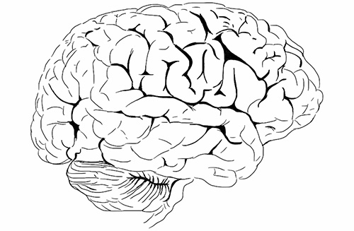

utenstat.no
utenstat.noFri vilje
1. juni 2014 | Sondre Bjellås
Sett av noen minutter av ditt liv for å lese den følgende teksten. Du vil allerede nå føle en trang til å fortsette å lese, men du skal få lov til å velge å la være. La vær å les videre, og unngå å oppnå noe av den kunnskapen jeg har å dele. Ditt valg.

Leser du fortsatt? Bra!
Du har sikkert hørt om begrepet «fri vilje», det er nesten garantert noe du har fått inn med morsmelken fra du var et spedbarn. Konseptet og begrepet om fri vilje, er en hjørnesten i vårt samfunn. Det er vanskelig å få en forståelse for hvor omfattende konsekvensene av dette fundamentet er.
Det finnes like mange forståelser og definisjoner på fri vilje, som det finnes mennesker. Når jeg bruker begrepet her, er det i den fantasifulle varianten som folk flest tror på: At man har frihet til å velge fritt i enhver situasjon.
«de gir dere fri vilje bare slik at de senere kan skylde på dere selv» – Friedrich Nietzsche
Introduksjon
Opprinnelig startet dette innlegget som ett enkelt innlegg, men for å i det hele tatt bli ferdig valgte jeg å legge det ut i flere delere. I senere tid har jeg ombestemt meg og valgt å oppdatere denne teksten til å bli ett enkelt innlegg for å gjøre det enklere å lese alt og følge den røde tråden. Dette er et omfattende emne som fortjener å bli grundig gjennomgått, for altfor mange tar for lett på dette og spesielt de som forsøker å forkaste de som vitenskapen og forskningen forteller oss om vår egen hjerne.
Helt enkelt
Som en introduksjon til dette emnet, ønsker jeg å starte helt enkelt med en arbeidsoppgaver til deg, og fortelle om et eksperiment utført av en av pionérene innenfor hjerneforskning (neuroscience på engelsk).
Først skal jeg fortelle deg, hvorfor dette ikke er enkelt for deg og alle oss andre, inkludert undertegnede, å forstå. Det er nemlig fordi dette er kunnskap vi ikke er utviklet til å forstå. Hjernen har utviklet seg og fungerer slik den gjør, av en rekke årsaker. Vi har mange optiske og andre former for illusjoner, hjernen er kjent for å spille oss et puss i blant. En av disse egenskapene, er forståelsen om at man er bevisst ansvarlig for handlinger. Uansett hvor mye kunnskap man besitter, vil man aldri klare å bryte illusjonen om fri vilje.
Hjernen vil, uansett hva som har forårsaket en handling, forsvare seg selv med å tro, og påstå, at den var bevisst ansvarlig/årsak for handlingen. Det vil den gjøre konsekvent, alltid. Det er ikke mulig å overbevise seg selv om noe annet. Selv med kunnskapen om at noe er galt, vil det ikke være mulig å observere illusjonen for hva den virkelig er.
For det er slik en illusjon fungerer. Du vet at noe er galt, fordi illusjonisten gjør noe som i utgangspunktet bryter med dine etablerte sannheter om verden, men du kan likevel ikke se forbi det faktum at hva du observerte, faktisk så ut til å være virkelig.
Eksperimentet
Rodolfo Llinás gjennomførte følgende eksperiment på seg selv: Ved hjelp av elektrisk stimulering av hjernen, fant han et område som påvirket ham til å bevege foten i en bestemt retning. Hver gang hjernen ble stimulert, beveget han beinet i samme retning. Han opplevde også at det var han som bevisst viljet beinet å bevege seg. Hva han deretter gjorde, var å bestemme seg før stimuleringen å bevege beinet i den andre retningen. Når hjernen ble stimulert, beveget han beinet i den retningen det alltid gikk. Hva tror du han tenkte etterpå? At det var et spøkelse som styrte beinet hans? Selvsagt ikke, han påstå bare at han ombestemte seg å beveget beinet i den retningen som stimuleringen påvirket han til å gjøre. Dette gjorde han om og om igjen, med samme resultat. Du kan høre litt om dette og mye annet i et intervju her: http://thesciencenetwork.org/programs/the-science-studio/enter-the-i-of-the-vortex
Oppgaven
Før jeg gir deg oppgaven, vil jeg bare på nytt nevne at dette er en enkel start på en lengre reise hvor jeg kommer til å dekke ting som determinisme, valg, rettssystemet, konsekvenser, fysikk og ikke minst, hvordan hjernen fungerer.
Oppgaven din starter nå du legger deg i kveld, eller i morgen hvis du ikke husker dette når kvelden kommer. Når du ligger i sengen din, følg med på tankene dine og hvor disse kommer fra. Har du noen innsikt i hvor tankene kommer fra? Har du noen kontroll på hva tankene er for noe?
Opplev at du f.eks. blir minnet på en oppgave du glemte på jobben, merk at du «bevisst» tar en avgjørelse om å holde på denne tanken og jobbe videre med den. Hvorfor glemte du oppgaven? Hva må du huske å gjøre imorgen for å fullføre oppgaven? Hva må ordnes, hva må fikses, hvilke detaljer må på plass… og helt plutselig, tenker du på ferien du hadde for 6 år siden. Du tenker på varme, og så plutselig tenker du på en veldig intim opplevelse som hendte for to uker siden. Så opplever du at du plutselig blir «våken» igjen og at tankene din har vandret bort fra oppgaven du glemte.
Ligg stille i sengen og lytt til ditt eget hode, det vil lære deg mer enn det jeg kan gjøre.
Tar vi valg?
Du tar selvsagt valg i ditt liv, men hva du velger kunne aldri vært noe annet enn hva du har valgt. Ingen av dine valg er tatt av din bevissthet. Alle dine valg er gjort av din underbevissthet. Nå bruker jeg begrepet underbevissthet, litt i den almenn forståelsen av begrepet. Vi har også begrepet ubevissthet, som er en fellesbetengelse på psykologiske prosesser vi ikke er bevisste over.
Du blir kun bevisst over dine valg etter de er gjort. Det samme gjelder alle dine tanker og bevisste sanseopplevelser. Fri vilje har vært tilstand for debatt i lang tid, men ikke før i senere tid har forskning begynt å utforske hjernen hos dyr og mennesket i god nok detalj til å gi oss økt kunnskap og innsikt i hvordan vi egentlig er bygget opp og fungerer.
Vår forståelse av konsepter som fri vilje, er veldig kulturelt betinget, som mye annet i våre liv. Veldig mange mener veldig mye om fri vilje, det meste av argumentene for fri vilje, krever god fantasi og tro – jeg vil si overtro, på at et fenomen som kan vise seg å ikke være mer enn en illusjon.
Jeg kommer ikke til å bruke mye tid på argumentere mot fri vilje, like lite som det gir mening å argumentere mot de som tror på guder, men noen av de gjengående tar jeg opp. Jeg anser de fleste argumenter som urealistiske og ikke-logiske forklaringer.
Mange bryter også med de fysiske lovene slik vi forstår dem. Forklaringene rundt fri vilje lider av for mange premisser. Da kan det være nyttig å trekke frem Ockhams barberkniv (Occam’s razor): Hvis man har to ulike forklaringer, men den ene har flere premisser, er den med færrest premisser sannsynligvis riktig.
Den moderne forståelsen av fri vilje, nemlig at den er en illusjon, har færre premisser, enklere forklaring, er logisk konsistent og i tråd med hva man burde finne tatt i betraktning evolusjon. Illusjon er feil begrep, men det kutter rett til kjernen av problemstillingen: Hvordan vi har blitt opplært i vår kultur til å anse en fri vilje, har flere feil og utfordringer.
Hvorfor mener du at du har fri vilje? Fordi du føler det er slik? Hvordan er det annerledes enn noen som påstår at de føler engler og demoner?
Advarsel
Du må forberede deg selv. Din hjerne vil yte motstand mot den nedenforstående forklaringen. Dette er helt naturlig, da vår hjerne hele tiden søker bekreftelse på allerede etablerte faktum i våre liv.
Heldigvis er også vår hjerne bygget opp veldig smidig, vi blir formet gjennom hele livet og kan rette på tidligere feil kunnskap vi har lært. Enkle fakta er lett å forandre på, som høyden på verdens høyeste fjell eller det faktum at Pluto ikke lengre er ansett å være en planet (… for meg vil Pluto alltid være en planet).
Det som er vanskelig å forandre, og hvor man møter mest motstand, er på prinsipper og fundamentale sannheter. Jeg forklarer senere hvordan hjernen er bygget opp med seksjoner som jobber med gjenkjennelse av ulike mønster, og du vil da kunne forstå hvor store konsekvenser det har for vår hjerne når fundamentene vi har bygget våre liv på blir rokket ved.
«It is important to recognice that the case I am building against free will does not depend upon philosophical materalism (the assumption that reality is, at bottom purely physical). There is no question that (most, if not all) mental events are the product of physical events. The brain is a physical system, entirely beholden to the laws of nature – and there is every reason to believe that changes in its functional state and material structure entirely dictates our thoughts and actions.» – Sam Harris
Grunnlaget for vår rettsoppfatning
I vår del av verden, er den frie viljen et veldig viktig grunnlag for vår rettsoppfatning. Vi dømmer kriminelle fordi de har utført handlinger, som vi som samfunn mener, de har valgt av egen fri vilje å utføre.
«Nietzsche var dermed den første som framsa påstanden om at den moderne forestillingen om bevissthet sto i gjeld til det moderne straffesystemet som dømte et menneske utfra dets «ansvarlighet», det vil si ved den bevissthet gjennom hvilken handlinger kan tillegges et individuelt subjekt: «Jeg gjorde dette! det er meg!».» – Wikipedia
Når man etterhvert begynner å få et bedre begrep på mangel av fri vilje, vil dette være ett av de første områdene man får en fiendtlig reaksjon mot alternative forklaringer. Du vil møte motstand i deg selv når noen påstår at enhver kriminell ikke hadde muligheten til å velge noe annerledes enn hva dem gjorde i hver enkelt gitte situasjon.
Du føler jo at du er i kontroll over dine egne valg og handlinger, så da vil det være naturlig å tro at også andre mennesker er i kontroll, men dette er ikke riktig. Hvor vanskelig er det ikke å forstå hvordan noen kan utføre forferdelige handlinger mot andre mennesker og dyr? For de fleste av oss, er det umulig å sette seg inn i en slik situasjon. Vi opplever det som motbydelig, og ønsker derfor å straffe slike handlinger.
Men hvis en persons handlinger ikke var et resultat av egne bevisste valg, men et resultat av kultur, arv, historie og livserfaringer, hvis et drap er et resultat av alt som har kommet før, blir det ikke da enklere å akseptere slike forferdelige handlinger? Det ligger nemlig her en veldig dyp innsikt som gir en logisk, konkret og direkte årsakssammenheng for alle handlinger i universet.
Det blir overflødig å spørre spørsmål om hvordan det var mulig for et menneske å utføre slike forferdelige handlinger. Handlingene er et resultat av alt som kom før, som vi kan studere, observerer og lære av. Denne kunnskap kan vi bruke for å hindre fremtidige handlinger.
For det er faktisk slik at ytterst få våkner opp en dag og begynner å drepe andre mennesker.
Dette er et område som har fått lite vitenskapelig oppmerksomhet, mye potensiale som vi ikke har utforsket. Hvis det virkelig var slik at vi har en fri vilje som til syvende og sist bestemmer, vil forskning på bakgrunn for kriminelle handlinger være mindre verdifulle.
Hvis det også var slik at vi har fri vilje, burde det ikke være forskjell på overlagt drap planlagt over lang tid, og drap utført i affekt som er over på sekunder. Hvis vi har fri vilje, burde hver enkelt være i like stor stand til å stoppe seg selv fra å gjennomføre et drap det siste øyeblikket før det blir en realitet. Men virkeligheten er ikke slik.
Store konsekvenser
Når ett av samfunnets største fundamenter blir satt i tvil, er det naturlig at det møtes enormt mye motstand. Som en motstander av det jeg deler av kunnskap her, som en tilhenger av fri vilje, er det viktig at du forsøker å forholde deg til fakta og argumentere på en rasjonell og logisk konsistent måte.
For det er ikke slik at den politiske elite i land som Norge ikke forstår hvor viktig fundamentet og troen på fri vilje faktisk er. Les hva Torbjørn Røe Isaksen hadde å si til Gunnar Tjomlid:
«Jeg tror på fri vilje. Jeg kan ikke se mennesket som en maskin, som vitenskapen ser den. Jeg mener, hvordan ville det sett ut om vi var helt forutbestemte og bare reagerte på ytre stimuli? Det er mange ting vi ikke velger selv, gener og oppvekstmiljø for eksempel, men konsekvensene blir for store om vi ikke skal regne oss som å ha fri vilje.» – Tjomlid.com (min uthevelse).
Gunnar skriver følgende videre som en kommentar på Torbjørns kommentar:
«Hvordan ville det sett ut om vi var helt forutbestemte og bare reagerte på ytre stimuli? Jeg mener svaret er at ting ville sett ut akkurat som de gjør nå. Vi kan ikke avgjøre eksistensen av fri vilje ved å observere hvordan mennesker oppfører seg. Vi har ingen forutsetning for å kunne skille «frivillige» handlinger fra «ikke-frivillige» handlinger gjennom ren observasjon. Jeg kan ikke vite om jeg skriver disse ordene av fri vilje, eller som et resultat av uunngåelige fysiske og kjemiske prosesser i hjernen min og i verden rundt meg.»
Fysikkens lover
Vi kan ikke bryte fysikkens lover, de er konstante i universet. Den vanlige deterministiske argumentasjonen bygger ofte på fysikkens lover om årsak og effekt. Min forklaring som følger nedenfor, tar mindre hensyn til fysikken.
Fysikken er der for å bekrefte konklusjonene som riktige, men veldig mange mennesker reagerer negativt på forklaringer om et deterministisk univers. Universet er ikke deterministisk på en måte man vanligvis tenker, det er ikke mulig å vite fremtiden selv om vi som individer aldri har tatt ett eneste bevisst og fritt valg.
Identisk univers
Første premiss av forklaringen er at gitt et likt univers, ville alle de samme valgene bli gjort. Hvis du byttet kropp med meg, til den minste detalj, og opplevde nøyaktig samme liv, ville du tatt de samme avgjørelsene og fått det samme resultatet.
Noen er nok ikke enige i et slikt premiss, men de ignorerer rett og slett fysikkens lover og spinner opp fantasier om at hjernen har noe mer enn hva som kan måles og registeres.
Hvis vi skapte en kopi av universet i en virtuell virkelighet, med samme fysiske regler og oppstart av universet, ville også det samme skjedd. Man kan på denne måten begynne å tro at man kan «spole» den virtuelle verden fremover, noe man også kan gjøre men ikke uten konsekvenser. Dette blir selvsagt høyst teoretisk, men det er viktig å forstå for å kunne forstå hvordan vår hjerne fungerer og hvordan verden går fremover og ikke står stille.
Teorien min er at i det øyeblikket vi observerer det virtuelle universet, har vi forandret vår potensielle fremtid. Fremtiden er ikke bestemt, den består av uendelige muligheter. I det vi observerer det virtuelle universet, har vårt eget univers oppnådd kunnskap som ikke tidligere var tilgjengelig og dette vil kunne påvirke fremtiden og det virtuelle universet vil ikke lengre kunne vise en representativ fremtid. Det virtuelle universet kan selvsagt gi oss mye nyttig informasjon, akkurat slik forskning på kultur, samfunn og ikke minst, hjerneforskning på individet, kan gi oss mye kunnskap om fremtiden og fremtidige valg og trender. Vi er i store deler formet av vår kultur og de fleste av oss har like holdninger og meninger.
Kunnskap fører oss fremover
Jeg har hatt diskusjoner hvor enkelte mangler evne til å forstå hvorfor de skal høre på mine ideer og meninger, hvis vi ikke har en fri vilje. Da er det vel det samme å lytte til en gulost, fremfor meg, har jeg blitt spurt. Dette er fatalisme, og er ikke mer enn forvirring hos den som argumenterer.
Hvorfor lese og høre på meg? Fordi økt kunnskap gir bedre grunnlag for fremtidige valg. Selv om du ikke tar bevisste valg, så tar altså underbevissheten (ubevisstheten) valg for deg. Underbevissheten styrer alt i livet ditt, hjerterytmen, produksjon av røde blodlegemer, din rasjonelle tankeprosess, dine valg og hvilke tanker du blir bevisste over. Når vi ikke har innsikt i valgene som gjøres av underbevisstheten, så gjør ikke dette oss til autonome zombier uten mål og mening.
Vår underbevissthet har god kapasitet til å konstruere veldig kompliserte og omfattende mål for oss. Det at vi utvikler oss, tilegner oss ny kunnskap, skaper kunst og andre verk, viser at vi ikke står stille. Vi er relevante i universet og vi har en viktig påvirkning, selv om vår individuelle påvirkning på mange måter er drevet av automatiske prosesser vi ikke har noen innsyn på.
Hvis universet er forutbestemt, da kan vi vel alle bare legge oss ned for å dø? Er en annen variant man gjerne hører. Som om disse individene fullstendig glemmer alt fra sine egne liv. Vi erfarer at vi har en påvirkning, vi erfarer at valgene som blir tatt av oss har konsekvenser for våre og andres liv.
Vilkårlighet
Selv om jeg ikke kommer til å gå mye inn på argumentene for fri vilje, så vil jeg kort nevne vilkårlighet (randomness). Enkelte mener at det eksisterer ett element av vilkårlighet i vår frie vilje. At vi uansett biologisk oppbygging, tidligere erfaringer og kunnskap, likevel har mulighet til å velge annerledes enn det underbevisstheten sier til oss, ved hjelp av den magiske frie viljen, så vil dette være basert på en vilkårlighet som du igjen ikke har bevisst kontroll over.
Hvis din frie vilje tar vilkårlige valg, bare i en prosent av tilfellene, vil du ikke lengre være ansvarlig for dine handlinger. Det kan ikke være noen vilkårlighet bak den frie viljen, da vil den i så tilfelle ikke kunne brukes som et grunnlag for et rettssystem. Vi vet altså ikke hvilke intensjoner vi kommer til å ha, før intensjonen først har oppstått. Å forstå dette er å realiserer at vi ikke er den som styrer våre tanker og handlinger på den måten folk flest tror.
Føler at vi har fri vilje
Vi ser vanligvis på følelser som en dårlig mekanisme for å styre livene våre og basere på virkelighetsoppfattelse. Mange mennesker lever livet etter følelser, men de fleste lever livet etter rasjonelle tanker og logiske prinsipper. Følelser kan gi oss mye innsikt, men de kan også være hindringer for å se virkeligheten for hva den er.
Det er et paradoks, at de som ofte appelerer mot følelser når man skal ta viktige avgjørelser, appelerer til følelser når dem argumenterer for fri vilje. For fri vilje er kun en følelse, vi føler at vi er den som konstruerer våre tanker og handlinger.
Kompatibilisme
De fleste seriøse filosofer har akseptert ett av premissene mine ovenfor, nemlig det at universet er deterministisk, men gjør det på en måte som gjør fri vilje kompatibel med determinisme. De påstår det ikke er noen logiske brister i argumenter for kompatibilisme. Det er skrevet mye litteratur på dette området, og mye ligner på teologi. Kanskje ikke så rart når formålet har vært å forklare hvordan en kjær illusjon bryter med naturen lover.
«Compatibilism amounts to nothing more than an assertoin of the following creed: A puppet is free as long as he loves his strings.» – Sam Harris
Mål
Våre mål er en av de viktigste elementene i forståelsen av vår vilje. Det er mange mål og ambisjoner vi har som ikke er kompatible med hverandre. Vi ønsker kanskje å slanke oss, samtidig som vi også ønsker å spise sjokolade. Vi ønsker å slutte å røyke, samtidig som vi føler røykesuget. Det er faktisk slik at vi ikke har noen som helst påvirkning i hvilke mål vi har. Vi føler oss tørste, og drikker et glass vann. Vi handler for å redusere smerte og ubehag.
Hjernen
I moderne tid, tatt evolusjon i betraktning, utviklet den delen av hjernen som heter neo-cortex. Denne delen er den mest moderne utviklingen i hjernen til primater, og den utgjør majoriteten av vår hjernemasse.
Mens vi fortsatt har mange av de veldig gamle delene i vår hjerne som ble utviklet av evolusjon for veldig, veldig lang tid tilbake, så har vi også fått denne nye seksjonen som fungerer som et overbygg på eldre deler. Mens det i de eldre delene ligger elementer som styrer funksjoner som vår seksuelle drifter, er dette også noe som neo-cortex både kan kontrollere og få impulser fra.
Vi kan ved hjelp av tanker vi konstruerer i vår neo-cortex, påvirke noen av de eldre delene av hjernen til å f.eks. bli seksuelt opphisset.
På samme måte har vi flere naturlige instinktive reaksjoner, som vil starte impulser fra den gamle delen og senere gjøre neo-cortex oppmerksom på hva som forekommer. Hjernen er et komplisert organ, jeg er ingen ekspert på hjernen, selv om jeg vet ganske mye mer om emnet enn gjennomsnittlig person, og dette er heller ikke tid og sted for å gi en full introduksjon til hjernen.
Jeg vil fokusere på neo-cortex, hva den er for noe og hvordan den er bygget opp. Vår bevissthet, som sannsynligvis er mer enn én bevissthet, har ikke blitt målt og dokumentert til å eksisterer i én enkel spesifikk lokasjon i hjernen vår.
Neo-cortex er den delen av hjernen som mange forskere tror, skaper vår opplevelse av en bevissthet. Det som gjør forskning på bevissthet vanskelig, er det faktum at dens aktivitet kan måles på tvers av hele hjernen. Noen mener bevissthet oppstår som et resultat av kommunikasjonen mellom alle de individuelle neuronene i hjernen.
«The finding shows that consciousness does not «live» in a particular place in our brain but rather «arises from the mode in which billions of neurons communicate with one another,» he said.» –
Neo-cortex er et enormt nettverk av neuroner som er koblet sammen. Disse er organisert i lag av seksjoner. De fleste av disse seksjonene er tomme ved unnfangelse og utvikling av oss før vi blir født. Både før og etter vi blir født, begynner vi å ta i bruke disse seksjonene og hjernen vår tillærer seg kunnskap av mange ulike former.
Neo-cortex er mer enn bare en enkel minnebank. Den står for størsteparten av vår kapasitet til å forstå og bruke språk. Språk er veldig viktig for vår suksess som en rase, og en stor og godt utviklet neo-cortex har gjort det mulig for oss å konstruere og ta i bruk et veldig komplisert språk.
Når vi utvikler oss og lærer, vil disse seksjonene bli «mettet». Disse nettverkene av neuroner fungerer slik at man lærer dem opp til å gjenkjenne mønster av elektriske impulser. De er også høyst fleksible etter de har blitt lært opp, da vi kan omprogrammere dem til nye funksjoner i løpet av vår levetid.
Mennesker som har fått ødelagt deler av hjernen som tidligere håndterte språk, kan ta i bruk andre deler og omprogrammere disse til å ta over oppgaven med språk.
Disse lagene av seksjoner, har kapasitet til å kommuniserer «opp» og «ned» i den forståelsen at de kan få beskjed om å være ekstra oppmerksom eller ikke.
Hvis man på ett veldig rudimentært (banalt) nivå som oppdager kanter og linjer, leser en bokstav som ligner på «e», vil denne delen av hjernen kunne gi beskjed til et lag i høyere abstraksjon at nå kommer den delen til å sannsynligvis få informasjon som den bør gjenkjenne som bokstaven «e».
Videre vil denne delene kunne gi beskjed videre til enda høyere abstraksjonsnivå, om at bokstaven «e» er en del av et ord, som igjen er del av en setning. Et ord igjen, kan ha masse assosiasjoner med korttids og langtidsminner.
F.eks. vil ditt navn kunne vekke en hel rekke med minner og reaksjoner på å lese eller høre ditt eget navn.
Kunstige neurale nettverk
Slike nettverk bruker vi også når avansert programvare på datamaskinen utvikles. Disse nettverkene kan ikke skrives av et menneske, de må læres opp.
Det er så utrolig mange variabler, at man er nødt til å konstruere opplæringsmiljøer for disse nettverkene med instruksjoner til nettverk hvorvidt input er GYLDIG eller UGYLDIG.
Dette brukes av blant annet Google, som har avansert stemmegjenkjenning på sin søkemotor. De har også avanserte algoritme som gjør gjenkjenning av lignende bilder som du laster opp.
Tradisjonelt sett, opererer datamaskiner med bits. Tallene 0 og 1 er binære tall, laveste bestanddel av en datamaskin. Disse er høyst deterministiske og det er essensielt for vitenskap, matematikk, økonomi og alt annet i våre liv – at datamaskiner er pålitelige.
Når man kalkulerer 1+1 må resultatet alltid være 2. Kunstig neurale nettverk derimot, trenes opp. Disse er fra utenforstående, ikke deterministiske.
Hvis vi har trent opp ett neuralt nettverk til å gjenkjenne bokstaven «e» i bilder, kan det godt hende at enkelte fonter og i enkelte bilder, så vil nettverket ikke oppfatte «e». Det kan også hende at den oppfatter andre bokstaven, som f.eks. «a» som en «e» i enkelte tilfeller.
På forhånd, er det umulig å vite dette, både praktisk og teoretisk. Man er nødt til å gi nettverket den nødvendig input (aka. kunnskap/minne/erfaring), før man kan vite hva det endelige resultatet er.
Det som derimot er essensielt i denne sammenligningen, er at hvis vi kopierer et ferdig trent nettverk, vil dette returnere nøyaktig samme resultat. Dette er styrt av fysikkens lover og kan ikke brytes.
På samme måte, hvis du og jeg byttet plass, hvis jeg var deg ned til den minste detalj og opplevd å leve ditt liv slik du har levd ditt liv, så ville jeg gjort nøyaktig de samme valgene og handlingene. Hvis noen påstår noe annet, har de et forklaringsproblem.
Men det er kun en teoretisk øvelse, det er ikke noe som er mulig, verken teoretisk eller praktisk å bevise. Vi kan ikke vite med høy nøyaktighet hva hver av oss kommer til å gjøre i fremtiden.
Kultur og miljø
Jeg har mitt opplært nettverk, du har ditt opplært nettverk. Hvordan jeg reagerer på et valg og utfører en handling, vil være annerledes enn din. Men, det betyr ikke at vi ikke kan vite noe om hva som vil være våre valg. Hvorfor det?
– Fordi vi har vokst opp i samme land, med samme kultur, samme historie, deler mye lignende genetikk, osv…
Dette gjør oss i stand til å bruke statistikk og andre verktøy til å kunne forutsi fremtidige valg og handlinger, med økende nøyaktighet desto mer homogen gruppen av individer blir.
Over tid, vil våre forskjeller øke etterhvert som vi får økt livserfaringer, økt ytre og indre stimuli basert på disse.
Mennesker som har reist mye, har ofte en annen holdning til globalisering og fremmede kulturer, enn individer som har bodd i en skjult stamme midt i Sør-Amerika.
Likevel er det innlysende at kultur og samfunn har en veldig sterk påvirkning.
Se til religiøse land rundt i verden, hvorfor er det slik at enkelte land har en overvekt av bestemte religioner?
Hvis vi har fri vilje til å velge religion, hvorfor er det så mange muslimer i Egypt?
Slik kunnskap er selvsagt ingen argumentasjon for at fri vilje ikke eksisterer, det er kun et bevis på at kultur og miljø påvirker oss i veldig stor grad.
Innsnevring av forståelse
Det hersker ingen tvil om at forståelsen av fri vilje har blitt innsnevret i større og større grad.
Vi er ikke lengre like uavhengig og fri fra vår biologiske og kulturelle arv som vi først tidligere har antatt.
Det er fortsatt noe motstand igjen hos mennesker, da den virkelighetsoppfatningen vi har i vår del av verden bygger på vår tro at mennesker er fri til å handle fritt i enhver situasjon.
Når vi ser på kulturene og individene som bor i de ulike kulturene, ser vi hvor mye vi blir formet av omgivelsene. Vi utvikler oss ved at vi tar i bruk eksisterende kunnskap og erfaringer vil tilegner oss.
Hvis vi hadde hatt en sterk fri vilje, ville vi sett større variasjon blant individer i en homogen gruppe. Ettersom vi ikke ser dette, må konklusjonen bli at den påståtte frie viljen er mye svakere enn hva vi tidligere har trodd.
For meg som ikke oppfatter virkeligheten på denne måten, som oppfatter at alle mine valg og bevisste tanker, er et resultat av underliggende ubevisste prosesser jeg ikke har noen innsikt i, virker det veldig rart å høre noen påstå at man kunne valgt annerledes i en situasjon.
Hvis vi ikke er et resultat av opplæringen som har forekommet i våre neurale nettverk, hva er vi da? Forklaringen og argumentene er mange og kreative, men ingen av de gir en helhetlig, logisk og konsistent forklaring på hvordan det er mulig at vi faktisk har fri vilje.
Konklusjon
Konklusjonen for hvorfor vi ikke har fri vilje, at vi ikke tar våre egne bevisste valg, blir dermed konkretisert til å bygge på følgende enkle premisser:
- Gitt et likt univers, ville alle de samme valgene bli gjort.
- Vi blir kun bevisste over de valgmulighetene som underbevisstheten presenterer for vår bevissthet.
- Når vi gjennomfører et valg, har vi ingen innsikt i hvorfor vi kom opp med svaret. Det oppstod tilsynelatende magisk i vår bevissthet.
Argumentene for hvorfor universet ikke er deterministisk gitt den overnevnte konklusjonen om mangel på fri vilje, er følgende:
- Hjernen består av neurale nettverk som ikke kan reduserer til de individuelle neuronene.
- Vi kan ikke vite resultatet (svaret) fra nettverket før etter vi har spurt.
- Etter vi har spurt nettverket, vil det likevel ikke være garantert at neste gang vil resulterer i samme resultat, da nettverkene lærer av erfaringer.
Hvorfor det ikke kan være noe vilkårlig med fri vilje:
- Hvis det eksisterer ett eneste snev av vilkårlighet i fri vilje, som f.eks. at hjernen blir bombadert med stråling som påvirker våre valg, vil ingen kunne være ansvarlige for sine handlinger. Dette utgjør en enorm selvmotsigelse i forhold til vår forståelse av moderne rettsvesen.
Bilde av Giulia Forsythe